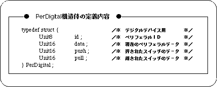

Return to previous page | Return to menu | Go to next page
In the case of SGL, the information of the Saturn PAD connected to the input port is stored in the system variable “Smpc_Peripheral [n]” (n = 0 to 29).
The total number of devices currently connected to input port 1 and input port 2 is stored in the system variables “Per_Connect1” and “Per_Connect2”.
When multi-tap is connected, the device information is stored in the “Smpc_Peripheral [n]” (n = 0-14, 15-29) area.
The system variable “Smpc_Peripheral []” stores a PerDigital type structure defined by the system, and each member of the structure contains the information shown in the figure below.

Note) The above structure is defined in the header file “sl_def.h” included with the system.
data: 16-bit peripheral data (indicates the current bit status) push: 16-bit peripheral data (bits are changed only when input is executed) pull: 16-bit peripheral data (changes bit only when input is canceled) id: 8-bit data string indicating the peripheral ID of the device
Peripheral data is a set of bits that represent only the input state, excluding the peripheral ID, from the data set described above. In the case of Saturn PAD, the input state bits are expressed in 16-bit length.
The members of the structure showing the Saturn PAD data introduced here consist of only the peripheral ID (8 bits) and the ON / OFF information of the switch of the input device (16 bits), but they correspond to devices other than the Saturn PAD. The structures are not necessarily the same.
For example, in the case of the Saturn mouse that is a pointing device, the peripheral data holds the X and Y coordinates of the mouse pointer in addition to the ON / OFF (16bit) of the switch as a digital device. However, since the size of the structure is uniform in all devices, it is possible to refer to Saturn mouse data as Saturn PAD type.
Caution
For details on peripherals, refer to “HARDWEAR MANUAL vol.1” and the header file “sl_def.h” included with the system.